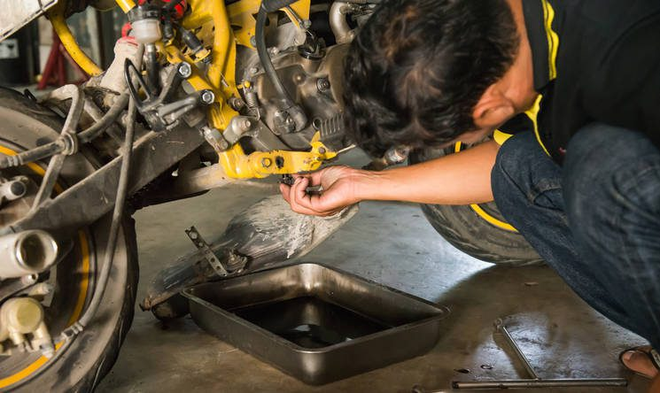
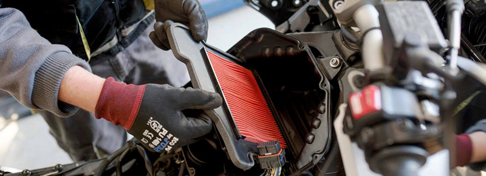
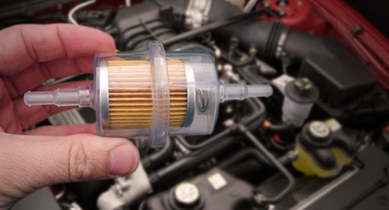
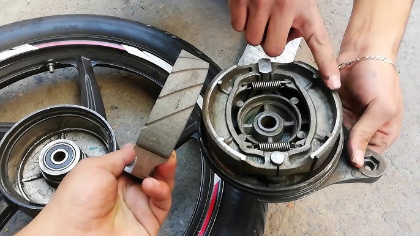
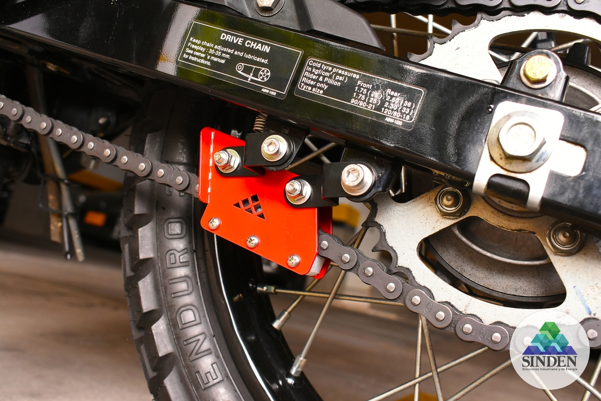
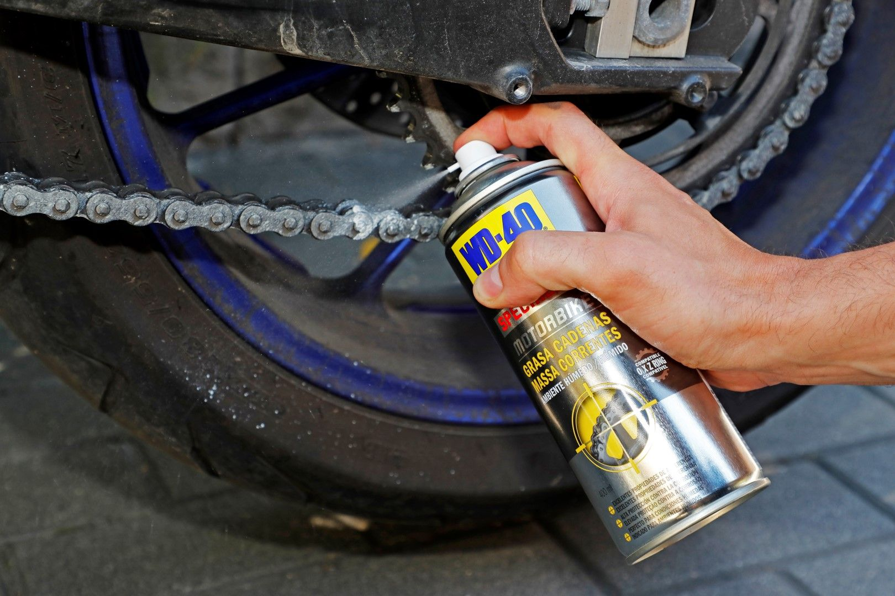

El mantenimiento preventivo es la clave para mantener tu moto siempre
lista, evitar fallas costosas y rodar con seguridad. Aprende a cambiar
el aceite, revisar frenos, tensar la cadena y mucho más con nuestra guía
visual paso a paso.
- Enciende el motor 1 minuto.
- Quita el tornillo de drenado y vacía el aceite viejo.
- Cambia el filtro de aceite si aplica.
- Coloca el tornillo y rellena con aceite nuevo (usa el recomendado por
el fabricante).

Cambio de Filtro de Aire
- Localiza la caja del filtro (generalmente bajo el asiento o
tanque).
- Abre la tapa y retira el filtro.
- Sustituye con uno nuevo o limpia si es reusable.
- Asegúrate de cerrar bien la tapa.

Cambio de Filtro de Gasolina
- Ubica el filtro entre el tanque y el carburador/inyección.
- Usa pinzas para cerrar las mangueras.
- Desconecta el filtro viejo y reemplázalo.
- Revisa posibles fugas al encender.

Revisión y Cambio de Líquido de Frenos
- Localiza el depósito (manillar o rueda trasera).
- Usa jeringa para retirar líquido viejo.
- Rellena con líquido DOT recomendado.
- Purga el sistema si cambias completamente.
Cambio de Balatas
- Retira la pinza de freno con herramienta adecuada.
- Extrae las balatas gastadas.
- Coloca las nuevas asegurándote de alinear bien.
- Ajusta y verifica que el disco esté libre.

Tensión de Cadena
- Coloca la moto en el caballete central o soporte.
- Afloja los ejes traseros.
- Ajusta con los tornillos laterales la holgura recomendada (2-3 cm).
- Centra la rueda y vuelve a apretar.

Lubricación de Cadena
- Limpia la cadena con desengrasante si está sucia.
- Aplica lubricante en eslabones internos mientras giras la rueda.
- Limpia exceso con trapo para evitar manchas.
- Hazlo cada 500-800 km o tras lluvia.

Video Tutorial
Aquí te dejo un video que explica cómo hacerle mantenimiento a tu moto